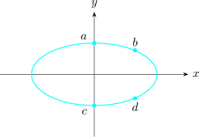

1.11 Implicit Functions and Jacobians
An equation \(F(x,y,z) = 0\) is a relation among three variables, and it may describe one or several functions \(z\) of \(x\) and \(y\). For example, \[x^2 + y^2+ z^2 - 1 = 0\] is satisfied by both \(z = \sqrt {1 -x^2 -y^2}\) and \(z = -\sqrt {1 -x^2 -y^2}\), each defined on the disc \(x^2 + y^2 \leq 1\). Either function is said to be implicitly defined by the equation, as distinguished from an explicit function \(z = f(x,y)\); what makes \(f\) implicitly defined is that \(F(x,y,f(x,y)) = 0\) for every \((x,y)\) in its domain. Similarly, an equation \(F(x,y,z,w)=0\) may define one or more implicit functions \(w\) of \(x\), \(y\) and \(z\).
Example 1.11.1. The relation \begin {equation} x^2 + 4y^2 - 4 =0 \label {eq:ellipse} \end {equation} is satisfied by the points of the ellipse shown below.

Solving, \(y = \pm \sqrt {1 - \frac {x^2}{4}}\), so (1) defines two continuous functions \(y(x)\) on \([-2,2]\), the upper and lower halves of the ellipse. Near a point such as \(b\) or \(a\) on the upper half, exactly one of them passes through it, so near that point the equation determines \(y\) uniquely as a function of \(x\). Near the points \((\pm 2, 0)\), where the ellipse has a vertical tangent, it does not: every neighbourhood contains points of both halves.
In other cases the equation cannot be solved by a formula at all. For example, \(2xy + \sin y = 0\) is transcendental in \(y\), and the implicit function theorem of a later subsection is what guarantees that it nevertheless defines \(y\) as a differentiable function of \(x\) near suitable points.
The General Chain Rule
Suppose there are two systems of functions, \begin {equation} y_i = f_i(u_1,u_2,\dots , u_p),\qquad i = 1,\dots ,n, \label {eq:systemy} \end {equation} and \begin {equation} u_k = g_k(x_1,x_2,\dots , x_m),\qquad k = 1,\dots ,p . \label {eq:systemu} \end {equation} Substituting (3) into (2) makes each \(y_i\) a function of \(x_1,\dots ,x_m\), \[y_i = f_i\big (g_1(x_1,\dots , x_m), \dots , g_p (x_1,\dots , x_m)\big ),\] and by Theorem 1.9.1 its partial derivatives are \[\frac {\partial y_i}{\partial x_j} = \frac {\partial y_i}{\partial u_1} \frac {\partial u_1}{\partial x_j} + \frac {\partial y_i}{\partial u_2}\frac {\partial u_2}{\partial x_j} + \cdots + \frac {\partial y_i}{\partial u_p}\frac {\partial u_p}{\partial x_j},\qquad i = 1,\dots , n,\quad j = 1,\dots , m .\] These \(nm\) formulas can be written as a single matrix equation. The Jacobian matrix of the mapping \((x_1,\dots ,x_m)\mapsto (y_1,\dots ,y_n)\) is the \(n\times m\) matrix of partial derivatives \[\left (\frac {\partial y_i}{\partial x_j}\right )= \begin {pmatrix} \frac {\partial y_1}{\partial x_1} & \frac {\partial y_1}{\partial x_2} & \cdots & \frac {\partial y_1}{\partial x_m}\\[1ex] \vdots & \vdots & & \vdots \\[1ex] \frac {\partial y_n}{\partial x_1} & \frac {\partial y_n}{\partial x_2} & \cdots & \frac {\partial y_n}{\partial x_m} \end {pmatrix},\] and the formulas say that it is the product of the Jacobian matrices of the two mappings (2) and (3): \[\left (\frac {\partial y_i}{\partial x_j}\right ) = \left (\frac {\partial y_i}{\partial u_k}\right )\left (\frac {\partial u_k}{\partial x_j}\right ),\] an \(n\times p\) matrix times a \(p\times m\) matrix. This is the general chain rule: the derivative of a composite mapping is the product of the derivatives, exactly as in one variable, with numbers replaced by matrices.
Example 1.11.2. Find the Jacobian matrix of the mapping \(x = \cos u \cos v\), \(y = \cos u \sin v\), \(z = \sin u\), which sends \((u,v)\) to a point of the unit sphere.
Solution. \[ \begin {pmatrix} \frac {\partial x}{\partial u} & \frac {\partial x}{\partial v}\\[1ex] \frac {\partial y}{\partial u} & \frac {\partial y}{\partial v}\\[1ex] \frac {\partial z}{\partial u} & \frac {\partial z}{\partial v} \end {pmatrix} = \begin {pmatrix} -\sin u \cos v & - \cos u\sin v\\ -\sin u \sin v & \cos u \cos v\\ \cos u & 0 \end {pmatrix} . \] It is \(3\times 2\), since the mapping takes two variables to three.
When \(m = n\) the Jacobian matrix is square, and its determinant \[ J = \det \left (\frac {\partial y_i}{\partial x_j}\right ) = \frac {\partial (y_1,\dots ,y_n)}{\partial (x_1,\dots ,x_n)}\] is the Jacobian determinant, or simply the Jacobian, of the mapping. Taking determinants in the general chain rule, and using \(\det (AB) = \det A\det B\), \[\frac {\partial (y_1,\dots ,y_n)}{\partial (x_1,\dots ,x_n)} = \frac {\partial (y_1,\dots ,y_n)}{\partial (u_1,\dots ,u_n)}\, \frac {\partial (u_1,\dots ,u_n)}{\partial (x_1,\dots ,x_n)} .\]
Example 1.11.3. Let \(u = x + y\), \(v = xy\), and let \(f(u,v) = (u^2 - 2v,\ u^3 - 3uv)\). Verify the general chain rule by computing the Jacobian matrix of the composite mapping in two ways.
Solution. The composite is \(f = (x^2 + y^2,\ x^3 + y^3)\), since \((x+y)^2 - 2xy = x^2 + y^2\) and \((x+y)^3 - 3(x+y)xy = x^3 + y^3\). Directly, \[\left (\frac {\partial f_i}{\partial x_j}\right ) = \begin {pmatrix} 2x & 2y\\ 3x^2 & 3y^2\end {pmatrix}.\] By the chain rule, \[\begin {pmatrix} 2u & -2\\ 3u^2 - 3v & -3u\end {pmatrix}\begin {pmatrix}1 & 1\\ y & x\end {pmatrix} = \begin {pmatrix} 2u - 2y & 2u - 2x\\ 3u^2 - 3v - 3uy & 3u^2 - 3v - 3ux\end {pmatrix},\] and with \(u = x + y\), \(v = xy\) the entries are \(2x\), \(2y\), \(3(x^2 + 2xy + y^2 - xy - xy - y^2) = 3x^2\) and likewise \(3y^2\). The two agree.
Questions on this section
Stuck on something here? Ask below and it stays attached to this topic.